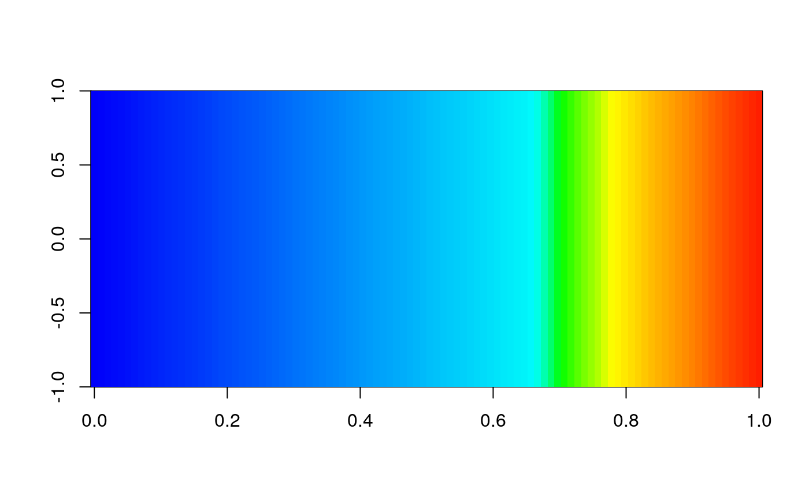

find_cpt returns the name of the colour gradient that satisfy
the search. It is a searcher. It is a mini mini mini google.
find_cpt(name)character; Word to be searched among the names of the cpt gradients.
names that satisfy the search.
This functions runs grep.
{
library(cptcity)
find_cpt("temperature")
image(matrix(1:100), col = cpt("idv_temperature"))
if (FALSE) {
library(cptcity)
# Do not run
# data names_cpt lazy loaded, already in environment
library(ggplot2)
ggplot(faithfuld, aes(waiting, eruptions)) +
geom_raster(aes(fill = density))
find_cpt("radar")
ggplot(faithfuld, aes(waiting, eruptions)) +
geom_raster(aes(fill = density)) +
scale_fill_gradientn(colours = cpt(n = 10, "ncl_radar"))
find_cpt("rain")
ggplot(faithfuld, aes(waiting, eruptions)) +
geom_raster(aes(fill = density)) +
scale_fill_gradientn(colours = cpt(pal = "pj_1_a_rainbow"))
}
}
